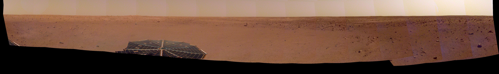

Mission to Mars
Scrape New DataLatest Mars News
NASA Garners 7 Webby Award Nominations
Nominees include four JPL projects: the solar system and climate websites, InSight social media, and a 360-degree Earth video. Public voting closes April 18, 2019.
Featured Mars Image
Current Weather on Mars
sol 138 (2019-04-17) low -97.7ºC (-143.9ºF) high -17.3ºC (0.9ºF) winds from the W at 4.3 m/s (9.5 mph) gusting to 12.6 m/s (28.1 mph) pressure at 7.30
Mars Facts
| Values | |
|---|---|
| Index | |
| Equatorial Diameter: | 6,792 km |
| Polar Diameter: | 6,752 km |
| Mass: | 6.42 x 10^23 kg (10.7% Earth) |
| Moons: | 2 (Phobos & Deimos) |
| Orbit Distance: | 227,943,824 km (1.52 AU) |
| Orbit Period: | 687 days (1.9 years) |
| Surface Temperature: | -153 to 20 °C |
| First Record: | 2nd millennium BC |
| Recorded By: | Egyptian astronomers |
Mars Hemispheres

Valles Marineris Hemisphere Enhanced

Cerberus Hemisphere Enhanced

Schiaparelli Hemisphere Enhanced

Syrtis Major Hemisphere Enhanced